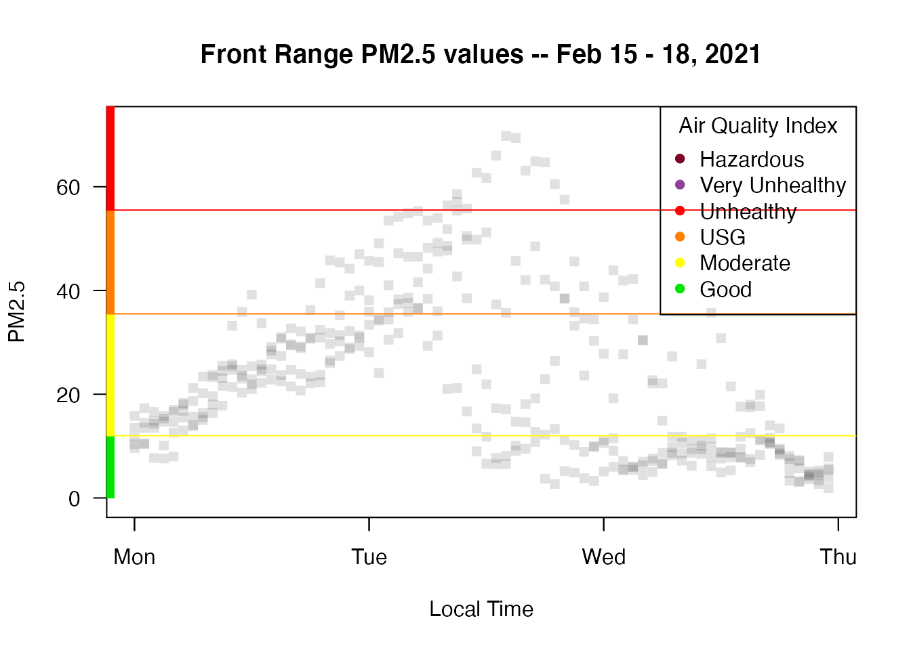
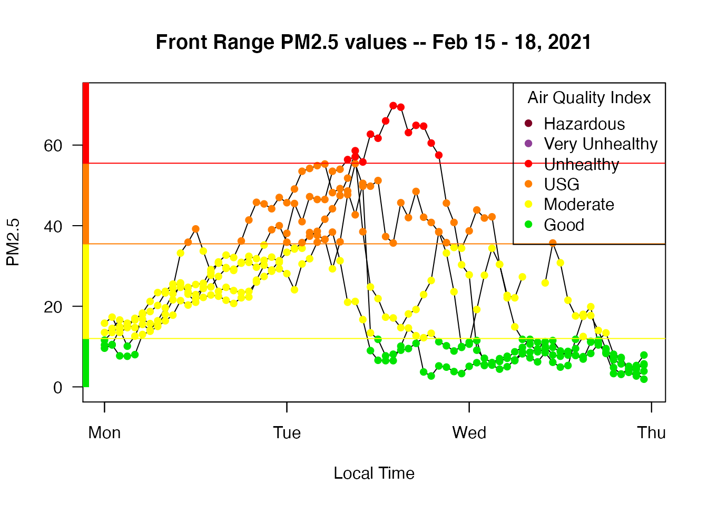
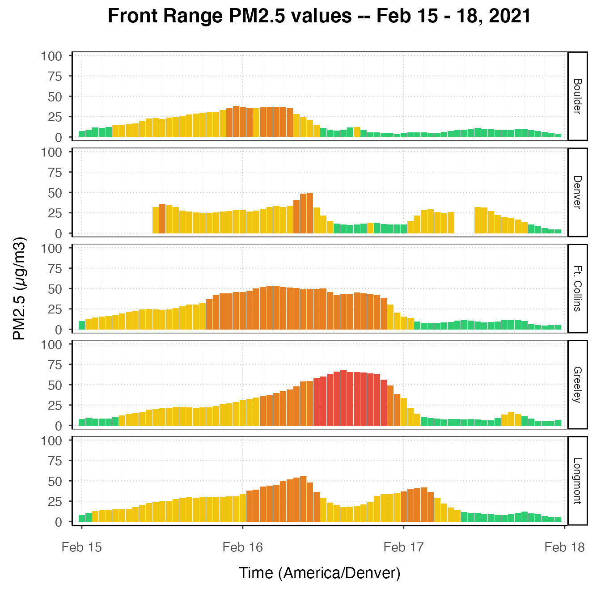

vignettes/articles/Example_Denver_Air_Quality_Forecast.Rmd
Example_Denver_Air_Quality_Forecast.RmdOn Tuesday morning (February 16, 2021), Meteorologist Ashton Altieri predicted worrying air quality levels in the Denver metro area and along the entire Front Range through the afternoon. The Colorado Department of Public Health and Environment encouraged people to limit driving non-EV vehicles in Denver, Boulder and Fort Collins to avoid worsening the air pollution levels.
In Colorado, poor air quality levels during winter are due to temperature inversions - “weather events in which cold, polluted air near the ground is unable to escape into the atmosphere and disperse because of a layer of hotter air above, which creates a trapping effect. In the winter, weakened sunlight and a frozen ground combine to create temperature inversions, sometimes lasting days at a time” (Air quality in Denver).
Let’s use the PWFSLSmoke R package to do our own investigation of the PM2.5 levels around that date to see if the forecast panned out.
We will begin by loading the dplyr and PWFSLSmoke packages and loading the latest data so we can find some monitors of interest between Denver and Fort Collins:
library(dplyr)
library(PWFSLSmoke)
# Load, subset and plot recent PM2.5 data
monitor_loadLatest() %>%
monitor_subset(stateCodes = "CO") %>%
monitor_leaflet()Zooming in and clicking on individual monitoring sites, we can create a collection of monitorIDs for which we will build a ws_monitor object for further inspection
# Vector of monitorIDs
monitorIDs <- c("080310002_01", "080131001_01", "080130003_01", "081230006_01",
"080690009_01")
# Use MazamaCoreUtils::dateRange() to ensure we get POSIXct times in the local timezone
dateRange <- MazamaCoreUtils::dateRange(20210215, 20210218, timezone = "America/Denver")
# Create a 'ws_monitor' object with monitors of interest
my_monitors <-
monitor_load(dateRange[1], dateRange[2]) %>%
monitor_subset(monitorIDs = monitorIDs)
# Another leaflet map showing max AQI values
monitor_leaflet(my_monitors)Indeed, the map shows that the main cities along the Front Range experienced poor air quality indexes (AQI) with PM2.5 reaching USG (unhealthy for sensitive groups) and Unhealthy levels.
We can explore PM2.5 levels in detail with a “dygraph” interactive timeseries plot:
monitor_dygraph(
my_monitors,
title = "Front Range AQIs - Feb 15 - 18, 2021",
showLegend = TRUE
)The PWFSLSmoke package also provides a baseplot timeseries plot that can be used to show all the data points in a publication-ready graphic:
monitor_timeseriesPlot(my_monitors, style = "gnats")
addAQIStackedBar()
addAQILines()
addAQILegend()
title("Front Range PM2.5 values -- Feb 15 - 18, 2021")
The monitor_timeseriesPlot() function allows a variety of visualizations to be created:
monitor_timeseriesPlot(my_monitors, type = 'l')
monitor_timeseriesPlot(my_monitors, style = 'aqidots', pch=16, cex = 1, add = TRUE)
addAQIStackedBar()
addAQILines()
addAQILegend()
title("Front Range PM2.5 values -- Feb 15 - 18, 2021")
For those with greater experience with R, the AirMonitorPlots package provides additional, ggplot2 based graphics for ws_monitor objects from the PWFSLSmoke package. AirMonitorPlots has not been released to CRAN but can be installed with:
devtools::install_github("MazamaScience/AirMonitorPlots")The following example demonstrates what is possible with AirMonitorPlots:
# After looking at my_monitors$meta$siteName, help ggplot out by assigning
# short labels to be used the facet label
my_monitors$meta$shortName <- c(
"Denver", "Boulder", "Longmont", "Greeley", "Ft. Collins"
)
# Load AirMonitorPlots
library(AirMonitorPlots)
# Fancy plot with AQI bars
gg <-
ggplot_pm25Timeseries(
my_monitors,
dateRange[1],
dateRange[2],
timezone = "America/Denver"
) +
ggtitle("Front Range PM2.5 values -- Feb 15 - 18, 2021") +
stat_AQCategory(color = NA) +
facet_grid(rows = vars(shortName))
print(gg)
Greeley experienced the highest PM2.5 levels (~70 µg/m3) while Boulder was the least affected (~40 µg/m3). All in all, the prediction of worsening air quality during the day on Tuesday was largely realized as air quality reached USG levels in all communities and Unhealthy in Greeley.
NOTE: Up-to-the hour PM2.5 data from official monitors as well as low-cost sensors is available at https://fire.airnow.gov.